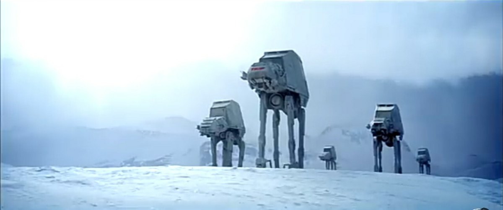

Il veicolo è stato visto per la prima volta in "Star Wars V: L'impero colpisce ancora" e di conseguenza anche in "Star Wars VI: Il ritorno dello Jedi". I vari momenti in cui sono apparsi nei film sono stati realizzati in stop motion. I modelli che sono stati utilizzati per questa tecnica erano alti più o meno 50 cm e vennero fatti camminare foto dopo foto su un plastico, rendendo possibile e molto meno costosa la realizzazione di questo grande progetto. Durante il quinto film, si possono vedere i Camminatori durante la battaglia di Hoth contro l'Armata Ribelle, dove vengono utilizzati per sfondare gli scudi dell'armata ribelle. I piloti di queste macchine devono superare rigidi test e sono estremamente abili al pilotaggio, e indossano tute speciali che li rendono autosufficenti per renderli abili alle manovre anche per molteplici ore consecutive. Di seguito alcune foto e fermaimmagini dei suoi momenti migliori.
